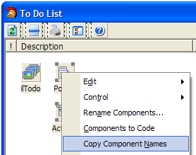

Copy Component Names |
|
This simple expert allows you to copy the names of a form's selected components to the clipboard. The format with one component name per line. This might be useful to select several components and then paste the names into the code editor, so you can easily operate on the components without retyping the names. This expert is also available from a Form's context menu. 
|